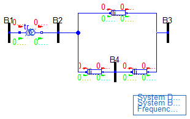
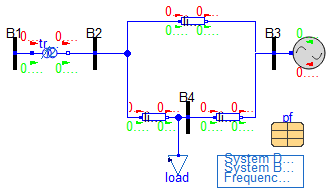
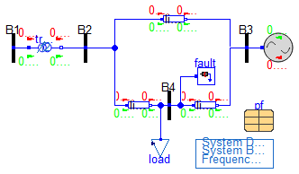

Partial network models.
Information
Partial network models
Extends from Modelica.Icons.BasesPackage (Icon for packages containing base classes).
Package Content
| Name |
Description |
 Base Base
|
Partial model containing basic network elements and SysData component |
| BaseWithPF
|
Partial SMIB Model with power flow data, system data block and a load. |
| BasePFnFault
|
Partial SMIB Model with power flow data and a fault component |
 Tests Tests
|
Test models for base network models. |
Partial model containing basic network elements and SysData component

Information
Base network partial model, it includes the network components and a SysData component.
Reference |
SMIB with Reference to PSAT, d_kundur2.mdl, PSAT |
Last update |
2024/2/28 |
Author |
Luigi Vanfretti |
Contact |
luigi.vanfretti@gmail.com |
Modelica definition
partial model Base
import Modelica.Constants.pi;
OpenIPSL.Electrical.Branches.PSAT.TwoWindingTransformer transf(
Sn=2220000000,
V_b=400000,
Vn=400000,
rT=0.0,
xT=0.15,
m=1.0);
OpenIPSL.Electrical.Branches.PwLine line_1(
R=Modelica.Constants.eps,
G=Modelica.Constants.eps,
B=Modelica.Constants.eps,
X=0.5);
OpenIPSL.Electrical.Branches.PwLine line_2(
R=Modelica.Constants.eps,
G=Modelica.Constants.eps,
B=Modelica.Constants.eps,
X=0.93/2);
inner OpenIPSL.Electrical.SystemBase SysData(S_b=2220000000,
fn=60);
OpenIPSL.Electrical.Branches.PwLine line_3(
R=Modelica.Constants.eps,
G=Modelica.Constants.eps,
B=Modelica.Constants.eps,
X=0.93/2,
opening=1);
OpenIPSL.Electrical.Buses.Bus B1(V_b=400);
OpenIPSL.Electrical.Buses.Bus B2(
V_b=400);
OpenIPSL.Electrical.Buses.Bus B3(V_b=400);
OpenIPSL.Electrical.Buses.Bus B4(
V_b=400);
equation
connect(line_2.p, line_1.p);
connect(transf.n, B2.p);
connect(B2.p, line_1.p);
connect(line_1.n, B3.p);
connect(line_3.n, B3.p);
connect(B4.p, line_3.p);
connect(B4.p, line_2.n);
connect(B1.p, transf.p);
end Base;
Partial SMIB Model with power flow data, system data block and a load.

Information
Extended model that contains power flow data (see the pf record) and a load with an RealInput interface.
Extends from Base (Partial model containing basic network elements and SysData component).
Modelica definition
partial model BaseWithPF
extends Base(
B2(v_0=pf.bus.V2, angle_0=pf.bus.A2),
B1(v_0=pf.bus.V1, angle_0=pf.bus.A1),
B3(v_0=pf.bus.V3, angle_0=pf.bus.A3),
B4(v_0=pf.bus.V4, angle_0=pf.bus.A4));
OpenIPSL.Electrical.Loads.PSSE.Load_ExtInput load(
v_0=pf.bus.V4,
angle_0=pf.bus.A4,
P_0=pf.loads.PL1,
Q_0=pf.loads.QL1,
d_P=Modelica.Constants.eps,
t1=Modelica.Constants.inf,
d_t=Modelica.Constants.eps);
Plants.inf inf(
P_0=pf.machines.PG2,
Q_0=pf.machines.QG2,
v_0=pf.bus.V3,
angle_0=pf.bus.A3);
PFData.PFScenarios pf ;
equation
connect(load.p, line_2.n);
connect(inf.pwPin, B3.p);
end BaseWithPF;
Partial SMIB Model with power flow data and a fault component

Information
This model extends BaseWithPF by adding a fault block.
Extends from BaseWithPF (Partial SMIB Model with power flow data, system data block and a load.).
Modelica definition
Automatically generated Fri Mar 8 12:46:01 2024.